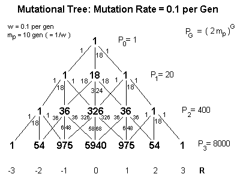

| Follow the above link or click the graphic below to visit the Homepage. |
 | Population Model for ASD Studies Jim Cullen |

| PG = ( 2 . mp )G |
| [ 1 + ( 2 . mp - 2)z + z2 ]G |
| v = | Sum(R2) - [ Sum(R) ]2 / PG PG |
| v = | 2 . G . P(G-1) PG |
| v = | 2 . G 2 . mp |
| v = | G . w |
| G | ||
| T( G , k ) = |  | ( 2 . mp-2 )2i-k . binomial( G , i ) . binomial( i , k-i ) |
| i = 0 | ||
| where... | ||
| G = Number of Generations from founder. k = G + final relative change in STR repeat value (R). | ||
| D( G , k ) = | T( G , k ) PG |
| G | ||
| Paths = | | binomial( G , i ) . binomial( i , k-i ) |
| i = 0 | ||
| where... | ||
| G = Number of Generations from founder. k = G + final relative change in STR repeat value (R). | ||
| u4 = | G . ( 4 . G - 3 ) mp2 |
| u4 = | mp - 3 G |
| Ecc = | Sqrt( 3 / G ) . 3G 2 . Sqrt( pi ) |
| Ecc = | Ecc 0.1875 / ( G - 0.1767 ) + 1 |
| Ecc = | Ecc 1 - 0.04311 / G3.314 |